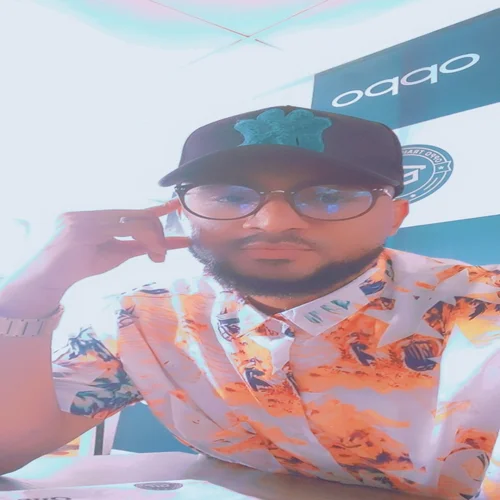

About me
 My name is Prince Ogbonnaya Nwachukwu my frinds call me Prince. I originate from Abia state Nigeria, from a family of four children, I happen to be the first, married with a wife and two kids. I love to design and build crafts, and my desire for these skills landed me as a trainner for a mobile company. I serve as a ward Bishop in a local unit in Ogun state Nigeria where i currently live with my most price possesions which is my family.
Abia State, Nigeria
Abia State, located in southeastern Nigeria, is a region rich in cultural heritage and economic potential. Established on August 27, 1991, from part of Imo State, Abia has since blossomed into a vibrant area known for its industrious spirit and natural beauty. The state capital, Umuahia, is a hub of political and economic activities, and thats where am from😊.